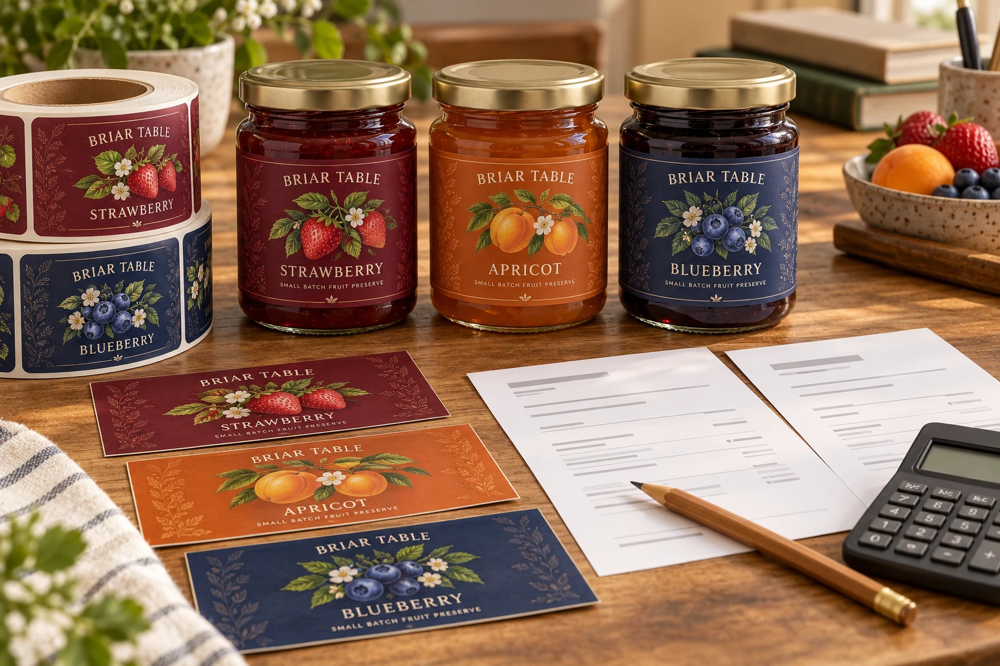
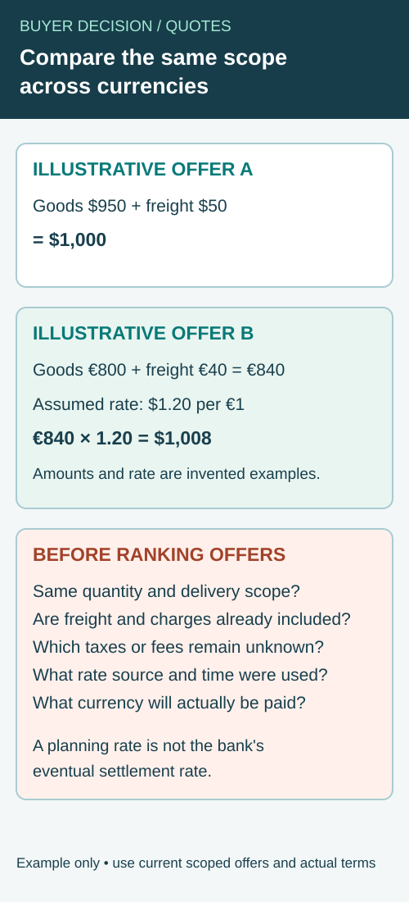

Two quotations arrive for the same launch. One has the lower unit price. The other includes a printed sample and delivery. Then the artwork count changes, a jar size is revised and the first supplier sends another total.
Purchasing is no longer comparing two prices for one job. It is comparing several versions of the job without a reliable record of what changed.
Give the specification a revision number before giving either quotation a ranking. Compare the same deliverable, identify each exception and keep the change history. The point is to buy a usable label order, not to make an incomplete price look expensive or a complete one look cheap.

AI-generated packaging example. Briar Table is a fictional original brand. The papers illustrate quote review; they contain no real supplier quotation, order price or measured saving.
Separate a cost driver from a scope change
Label dimensions, quantity by artwork, face material, adhesive, finish, tooling, proofing and supply format can change the price. Those factors belong in the request before the suppliers calculate it.
An illustrative order for three jam flavors might have the same total quantity as an order for one flavor, but the artwork versions and quantities per design differ. A supplier's grouping rules matter. For example, Sttark's published FAQ describes combining designs under shared size, material and laminate conditions. That is a supplier-specific example, not a promise that every printer groups designs or prices them the same way.
If one quotation is for three designs and another is for one, the difference is not yet evidence that either supplier is expensive. Ask both to price the same SKU schedule. Where one cannot supply the requested construction or format, keep its alternative clearly labeled.
Build one controlled quote request
Create a simple reference such as Label RFQ revision A. Attach the approved or provisional drawing, artwork list and delivery requirements. A reference is useful only if the suppliers can identify exactly what it contains.
Use this worksheet to normalize the replies. Keep the original quotation attached; do not erase the supplier's wording when you translate it into your comparison.
| Comparison field | Required baseline | Supplier response or exception |
|---|---|---|
| Revision | Dated RFQ, dieline and artwork versions | Exact versions priced |
| Quantity | Required quantity for each SKU | Supplied quantity and any stated tolerance |
| Construction | Face, adhesive, liner and finish, or an explicit request for advice | Identified proposal; unresolved specifications marked |
| Format | Rolls or sheets; application requirements | Core, diameter, unwind and distribution by SKU as applicable |
| Preparation | File readiness and required proof/sample approval | Included work, additional charges and approval dependencies |
| Recurring and one-time charges | Separately identified order costs | What recurs, what is reusable and under which conditions |
| Delivery | Destination, requested timing and quoted delivery basis | Included transport, exclusions and timing assumptions |
| Commercial basis | Currency, validity and payment conditions | Exceptions and the expiry of the offer |
| Release condition | Which decisions remain open | What must be confirmed before production starts |
This table is an editorial purchasing tool. It does not establish legal delivery terms, a universal tolerance or a supplier's capacity. Ask the responsible parties to explain the conditions they actually offer.
Compare a confirmed amount without double counting
Start with the amounts each supplier explicitly charges for the same baseline. Separate included and excluded items. If freight is already inside a delivered total, do not add the same freight again merely because your worksheet has a freight row.
Similarly, a proof allowance, setup cost or tooling charge might be included, separate or inapplicable to a particular process. Ask for clarification instead of automatically assigning an industry-average fee. A zero line can mean included, not required, omitted or not yet quoted; those are different answers.
For a clearly defined order, a useful arithmetic check is confirmed comparable amount divided by the corresponding usable quantity. Keep the currency, delivery basis and quantity assumptions visible. If the denominator includes speculative damage, obsolescence or application waste, label those figures as a scenario rather than treating them as observed loss.
Do not turn possible rework into a fabricated cost claim about a competitor. A material or roll-format mismatch is first a specification exception to resolve. Only actual data or explicitly stated assumptions support a numerical comparison of its consequences.
Compare quotes in different currencies without mixing the delivery scope
Two suppliers may price the same label job in different currencies, with freight included in one offer and shown separately in the other. Converting only the unit price can make the cheaper-looking proposal incomplete. First confirm the same specification, quantity and delivery destination; then convert the comparable confirmed charges using one clearly dated comparison rate.


The comparison rate is a planning input, not a promise about the bank's eventual conversion, settlement fees or the exchange rate on the payment date. Retain each supplier's original quotation and currency alongside the converted view. If payment, freight or a charge is not confirmed, keep it open rather than treating a blank field as zero.
| Comparison field | What to record for each offer | Why it matters |
|---|---|---|
| Same job | RFQ revision, component, finished specification and quantity | Currency conversion cannot repair a scope mismatch |
| Goods amount | Confirmed price and original currency | Keep the amount supplied by each vendor intact |
| Transport | Included, separately quoted or still unknown for the same destination | Avoid adding freight twice or omitting it |
| Other confirmed charges | Proof, tooling or other stated amounts and currency | Compare only charges whose scope is understood |
| Comparison rate | Source, timestamp and units, such as USD per EUR | Keep the calculation reproducible and the direction clear |
| Payment basis | Actual settlement currency, bank terms and unresolved fees | A planning conversion is not the eventual debit |
| Validity and exceptions | Offer expiry, delivery exclusions and unanswered questions | Mark incomplete comparisons instead of ranking them |
Use an illustrative conversion, not an assumed market rate
Suppose a hypothetical offer A is USD 950 for goods plus USD 50 confirmed freight. Offer B is EUR 800 for goods plus EUR 40 confirmed freight. For demonstration only, assume a comparison rate of 1.20 USD per EUR. This is an invented rate and invented offers, not today's exchange rate or this website's quotation.
Under those assumptions, A totals USD 1,000. B totals EUR 840, which converts to USD 1,008 at the assumed rate. Both figures exclude any unquoted taxes, payment charges, losses or other differences. A $8 difference in this illustration is not evidence of a real saving: the actual rates, fees, terms, construction and delivery scope could change the outcome.
If the buyer receives a rate expressed as EUR per USD, do not multiply it as if it were USD per EUR. Ask the finance owner to confirm the direction and appropriate rate source. For an actual decision, record the chosen rate and time, apply the same basis to both offers and check the arithmetic with the responsible team.
Keep unknown costs and payment timing visible
If one quote excludes destination charges or uses a different delivery arrangement, ask the supplier or logistics owner to identify the missing scope. Do not fill an unknown freight or import charge with an unrelated industry average and call the resulting total confirmed. Where several payments occur in different currencies or at different times, list those amounts and expected dates separately; an early deposit and later balance may settle at different rates.
A lower planning total does not approve the label construction or establish that a requested delivery date is accepted. The delivery milestone guide separates requested, estimated and confirmed dates. The split-delivery schedule helps compare shipments to multiple packing locations on a consistent basis.
For an inquiry, send the RFQ revision, label specification, quantity by component, destination and requested delivery scope. Ask the supplier to identify its quotation currency, included charges and exceptions. The actual commercial and payment terms remain subject to the parties' confirmation.
Keep quantity risk separate from unit price
A larger order may show a lower price per label while committing more money and inventory. That can suit a stable repeat item. It may be a poor fit when the artwork is unsettled or the variants sell unevenly.
Compare the required launch quantities with the quoted order quantities, by SKU. Ask whether unused labels would still match the expected artwork and product plan. Do not divide the total evenly across flavors merely because the result looks tidy.
The small-order MOQ guide addresses the role of smaller trials. A trial does not automatically reproduce the terms or economics of the later production order. Confirm those separately when the specification is ready.
Make revisions explainable
When the jar size or SKU mix changes, issue a new RFQ revision and list the differences. Ask for a revised offer tied to that revision, rather than trying to reconcile a number sent in a message with an older attachment.
Keep a short change log: date, changed field, reason, affected artwork or SKU, supplier confirmation and revised total. Mark the earlier offer superseded for comparison purposes. Retain it as history, because it explains why a price moved.
If the new price rises, first check whether the deliverable grew or an earlier assumption was corrected. If nothing in scope changed, ask what commercial condition changed. Neither conclusion should be guessed from the amount alone.
For repeated small variants, the multi-SKU short-run guide covers production coordination. This quotation record deals with a different decision: whether the purchasing comparison still describes the same job.
Change one variable when you need a budget alternative
Ask for a base quotation and a separately identified alternative. Removing a decorative operation, using a shared dieline or changing the order schedule may be worth discussing. Keep the proposed construction and application requirements visible, so the cheaper alternative can be assessed on its own merits.
Do not accept a vaguely described “equivalent material” solely because the total falls. Ask what changed, what evidence supports the use conditions and whether a corresponding sample is needed. Conversely, do not add a premium finish when it has no defined job. The materials and finishes page provides context for that discussion.
Close the gaps before releasing the order
Identify the selected RFQ revision, supplier proposal and outstanding exceptions. Confirm which proof or sample decisions remain, who can approve them and what event starts the production schedule. A quotation date alone does not establish an arrival date.
Keep the production release linked to the same specification used for the purchasing decision. When a later change affects price, performance or timing, obtain the corresponding confirmation. This is more useful than retaining only a screenshot of the cheapest line.
Send a baseline that can be priced
Request a specification-based quotation through the contact page with the package photo, label dimensions, quantity per design, application and storage conditions, required format and delivery destination. Include your current RFQ revision and identify the fields still undecided.
Attachments go through the listed email or WhatsApp route; the form opens an email draft. Ask which requirements can be quoted and which need clarification first. A comparable answer begins with a shared job description, not a promise of the lowest unit price.